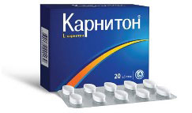

На этой страничке приводятся некоторые средства помогающие достичь желаемой цели
Перед физической нагрузкой принимайте данный БАД, он способствует повышению проницаемости клеточных мембран для жира.

Перед физической нагрузкой проблемные места разогревайте (растерайте) камфорным маслом - способствует повышению проницаемости клеточных мембран для жира.
Средство с CoQ10 для применения во внутрь против обвиса кожи.
Средство с CoQ10 для применения наружно против обвиса кожи.
Первоклассное наружное средство против любого рода высыпаний на коже.
Незаменимый источник йода на каждый день, который так необходим для работы щитовидной железы, отвечающей в том числе и за жировой обмен.
Вернуться в начало